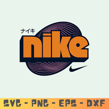
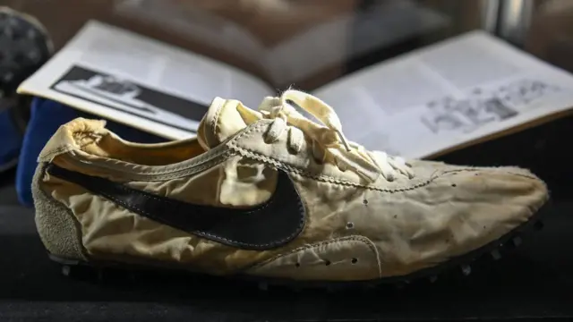
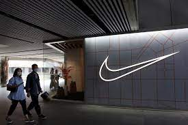
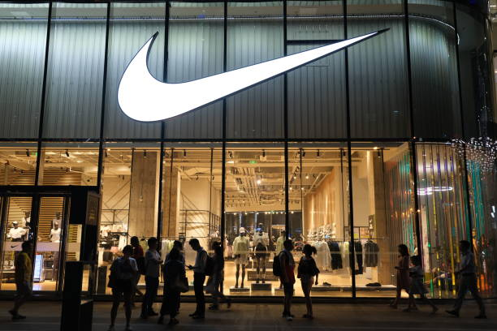
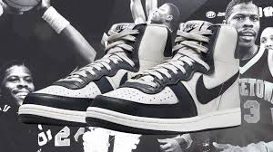
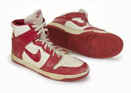

About us

History — “Where We Started”
Our journey began with a simple idea: to create a better solution for people who needed reliable and accessible services. Starting as a small team with big ambitions, we launched our first product and quickly realized how much impact we could make. Over time, we expanded our expertise, improved our technology, and grew into a trusted company that continues to evolve every day.

“Nike’s first sneakers”
The first Nike sneakers were released in 1972 under the name Nike Cortez. However, when talking about iconic models, the first legendary sneakers were the Nike Air Jordan 1, designed for Michael Jordan in 1985. Another important milestone was the Nike Air Tailwind (1979), the first running shoes with Nike Air cushioning technology. Nike Cortez (1972): This is the oldest well-known sneaker model from the brand. Nike Air Tailwind (1979): The first running shoes with an air cushion in the sole, which became a technological breakthrough for the company. Nike Air Jordan 1 (1985): The first model created specifically for basketball player Michael Jordan, which became a symbol of street style and a revolution in sportswear marketing.
Mission & Vision — “Why We Exist”
Our mission is to make innovation accessible and useful for everyone. We believe that technology should empower people, simplify everyday tasks, and inspire progress. Our vision is to become a leading platform that sets new standards of quality, transparency, and customer experience in our industry.

Team — “The People Behind the Brand”
Our team is a group of passionate professionals who share the same values and commitment to excellence. Each member brings unique skills and experience, contributing to the growth of our company. We believe that strong results come from strong teamwork, creativity, and a shared desire to make a difference.

Values — “What Matters to Us Most”
We build our work on a foundation of honesty, responsibility, and innovation. Our core values include: – Integrity: we act transparently and ethically. – Quality: we aim for the highest standards in everything we do. – Innovation: we constantly explore new ideas to improve our products. – Respect: we value our customers, partners, and team members equally.

Achievements — “What We’ve Already Accomplished”
Throughout the years, we have reached important milestones that highlight our dedication to excellence. From industry awards and certifications to partnerships and customer success stories, our achievements reflect the hard work and passion of our team. And this is only the beginning — we continue to grow and aim even higher.

Nike Dunk (1985) — From Courts to Culture
Originally designed for college basketball, the Nike Dunk soon expanded far beyond the university courts. Its versatile shape and endless color variations made it a favorite among skaters, collectors, and streetwear fans. Over time, the Dunk became a cultural symbol that represents creativity, individuality, and community.
.jpg)
Nike Air Max 1 (1987) — A Visible Innovation
The Nike Air Max 1 changed the sneaker world by making Air cushioning visible for the first time. Designed by Tinker Hatfield, the model combined advanced technology with bold style. Its exposed Air unit not only improved comfort but also became a defining design element that shaped Nike’s future identity.
.jpg)
Nike Blazer (1973) — Early Basketball Roots
The Nike Blazer marked one of the brand’s earliest steps into professional sports. Originally created for basketball, it quickly gained popularity thanks to its clean look and durable construction. While it started on the court, the model later found new life in skate culture, becoming a timeless favorite across generations.
.jpg)
Nike Waffle Trainer (1974) — A Running Revolution
The Nike Waffle Trainer introduced a breakthrough in running footwear with its iconic waffle-pattern outsole. Invented by co-founder Bill Bowerman, the design provided exceptional traction and lightweight performance. This model helped Nike establish itself as a leader in running innovation and changed the way athletic shoes were made.
.jpg)
Nike LDV (Late 1970s) — Built for Endurance
The Nike LDV became a trusted companion for long-distance runners. Known for its comfort, lightweight build, and stability, it offered athletes the support they needed during intense training. The LDV represented Nike’s commitment to creating reliable performance footwear at a time when the running boom was just beginning.
Nike LDV (Late 1970s) — Built for Endurance
The Nike LDV became a trusted companion for long-distance runners. Known for its comfort, lightweight build, and stability, it offered athletes the support they needed during intense training. The LDV represented Nike’s commitment to creating reliable performance footwear at a time when the running boom was just beginning.